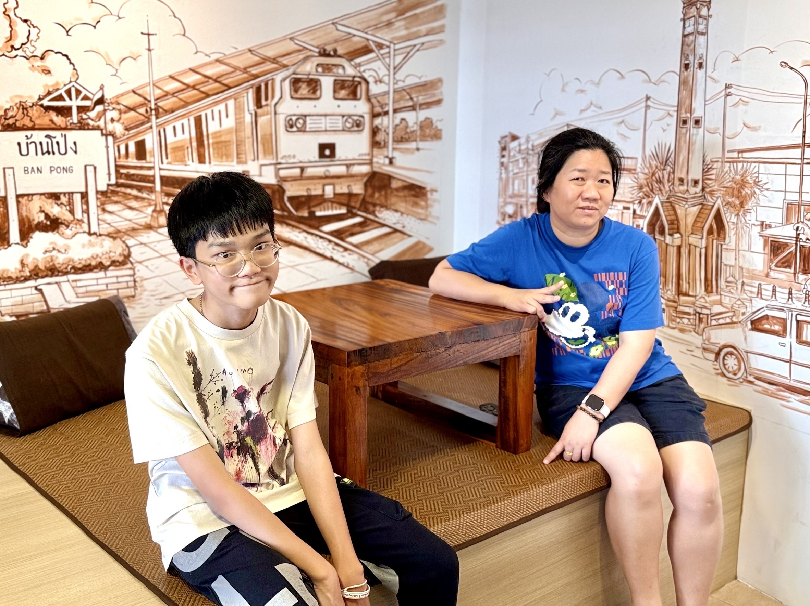

วันเเม่เเห่งชาติ🧡
สิ่งที่อยากบอกเเม่
เเม่ครับ ผมอยากบอกเเม่ว่า "ผมรักเเละขอบคุณเเม่ครับ" ขอบคุณที่เเม่คอยตักเตือน เเละให้กำลังใจในทุกๆเวลา ขอบคุณแม่ที่ทุ่มเททำทุกอย่างเพื่อผม แม้ในวันที่เหนื่อยล้า แม่ก็ยังอดทนและยิ้มให้ผมเสมอ ทั้งเรื่องเล็กเรื่องใหญ่ แม่ไม่เคยปล่อยให้ผมรู้สึกโดดเดี่ยวเลย
กลอนในวันเเม่
ประนมมือก้มกราบลงบนตัก
ด้วยความรักความเคารพต่อแม่ฉัน
ซึ้งพระคุณอันยิ่งใหญ่มากอนันต์
ใจเบิกบานแสนอบอุ่นวันแม่เอย